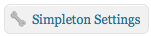
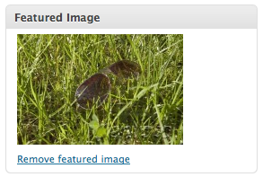
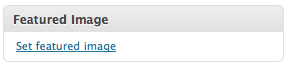
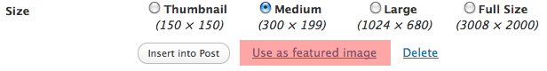

Hi there! Thanks for your purchase of my Simpleton WordPress theme at ThemeForest. Simpleton was intended to be used in personal blogs (with one or many contributors), however, the ideas are endless and the theme can always be molded for other uses as well.
This page contains very important information on how to setup your new theme and ensure it works smoothly with your WordPress installation. Ensure that you thoroughly and carefully read it and take your time while setting it up to minimize any possible issues. Also, if you're new to WordPress, welcome!!! WordPress has a great community of helpful, friendly and knowledgeable web professionals willing to help you out. One more note if you're new- make sure you're confortable with navigating around the WordPress admin area and also, I'd strongly reccomend checking out the Getting Started Area of Wordpress.org- it has helpful and easy to understand information on where to go first to learn more about WordPress. Now, onto the installation!
Setup & Installation Instructions
Step One - Make Sure You Have WP Version 2.9.2 or Higher
The first thing you need to do is make sure that your version of WordPress is compatible with the theme. To check this, go to any page in the WordPress admin area and look at the very bottom right to find the version. I made this theme in WordPress 2.9.2, you'll need at least that or greater to proceed. If you don't have that version, visit
this page on WordPress.org to find out how to upgrade.
Step Two - Install The WP-PageNavi Plugin
Next, you
need to install the WP-PageNavi Plugin which the theme needs to add cool page numbers to the bottom of "paginated" post lists. You can install this theme through the WordPress admin area by going to Plugins > Add New and entering WP-PageNavi in the search box. Next click on Install next to the first entry, and click on the red Install Now button in the box that comes up. On the next page you're forwarded to, click on Activate Plugin and you're good to go. This plugin can also be manually installed
here.
Step Three - Upload and Activate The Theme
In the folder you downloaded and unzipped from Themeforest, there's a folder called Upload. In the Upload folder, there's another folder called simpleton, which contains the actual WordPress theme. Upload that folder to the /wp-content/themes/ directory of your WordPress installation.
Optionally, if you don't want to upload that manually, there's also a file called Simpleton.zip in the Upload folder which you can simply upload directly into WordPress from the Appearence > Add New Themes > Upload page in the WordPress admin area.
Step Four - Activate The Theme From WordPress
Head over to your WordPress admin area and visit the Appearence > Themes page. Under the Available Themes heading you should see the Simpleton theme along with an option to activate it below the picture and description. Click the activate button and let the theme setup fun begin!
Step Five - Setup the Theme's Widgets and Other Settings
Here comes the fun part- settings! After activating the theme, go to your WordPress admin area and you should see a new menu item called Simpleton Settings (like the icon to the left). Click on that menu item, and carefully read and fill in each one of the settings on that page. You can expand and contract the three sections of settings by clicking that orange arrow to the left of the setting group's name. Each setting also has a chunk of descriptive text to the right of it explaining what it does and how to use it.
When you're finished looking and tweaking the settings on that page, click over to the Appearance > Widgets page and add widgets to the theme. You can add them to the right sidebar of the homepage, the right sidebar of the posts/pages or to the three areas at the bottom of each page of your site/blog.
The theme also supports the new WordPress 3.0 menu system. If you're using WordPress 3.0, go to the Appearance > Menus page and edit the main navigation menu of the theme from that page. People who install Simpleton on a WordPress installation with a version before 3.0 will simply have the pages of their site listed at the top.
Using The Theme
Post Thumbnails
Simpleton also supports neat thumbnails which are displayed to the left of posts. They're optional and it won't disrupt anything if you don't attach them to posts, although they sure look cool when you do add them! To add them to posts, look for the Post Thumbnail box in the right column of the post editor in WordPress. In WordPress 3.0 and higher, it's called the Featured Image. To add a thumbnail, simply click on Set Featured Image (or Post Thumbnail) (see below) and in the window that pops up, select browse and find the image you want to use on your computer. Now, instead of clicking on Insert Into Post, click on Use As Featured Image (also see below). WordPress will process the image, and that text will turn into "Done". Exit out of the image browser and you should now see a smaller picture of your featured image in that same Featured Image box. Removing a featured image can also be done after one has been saved- just click on Remove Featured Image and you're good to go!


Changing The Theme's Logo
Inside of the of the Logo folder is a .PNG and editable .PSD file where you can change the design and text of the Simpleton logo. If you have a license of Adobe Photoshop or another program that can open and edit .PSD files, you can open the logo.psd file and change it to your liking! The font used in the logo is the Junction font available
here.
Other Information
Obtaining Support & Upgrades
I'll continue adding small features to Simpleton until I feel that the theme is sufficient. These small upgrades also squash bugs that I find in various parts of the theme, so make sure you stay updated! A changelog as well as upgrade instructions can be found
here. Updates to the theme can be downloaded from the ThemeForest downloads page where you originally download the theme, and troubleshooting and support information can be found
here.
Credits
Here's a list of all of the scripts, graphics and other content that went into building the Simpleton WordPress theme: